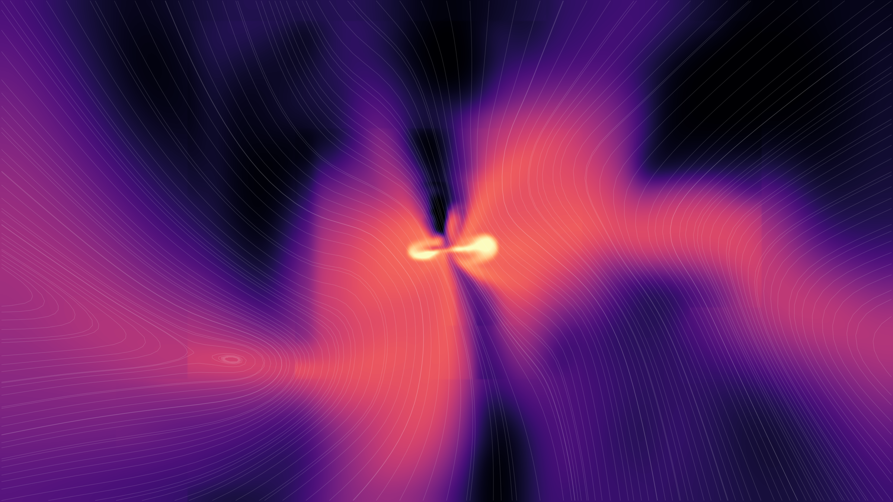

Non-ideal MHD

I’ve built non-ideal MHD into my GPU version of RAMSES, mini-ramses, in CUDA Fortran. Ohmic and ambipolar diffusion come from an equilibrium model of cosmic-ray ionization and grain charging. Runge–Kutta–Gegenbauer super-time-stepping keeps the stiff diffusion terms from throttling the hydro timestep.
Through sink formation
Keeping deep-AMR collapse runs alive through sink formation took several changes, because diffusivities span many orders of magnitude. I bound the stage count using the same edge coefficients as the electromotive force, lag the ambipolar diffusivity over each super-step, and use an LLF fallback Riemann solver in near-vacuum magnetized cavities. I also floor the density used to evaluate resistivities; this adds no mass.
The calculation
I’m following a 1 M☉ Boss–Bodenheimer-type core with mass-to-flux ratio 3, a field tilted 30° from the rotation axis, and Mach 0.5 seed turbulence. Twelve AMR levels take cells from ~300 AU to 0.15 AU on one NVIDIA H200. Sinks form only in bound, collapsing gas that passes the Federrath et al. (2010) tests.
With Ohmic and ambipolar diffusion, a rotationally supported disk of ~2–3 AU radius forms and persists, while the inner envelope launches bipolar outflow cavities. In my companion ideal-MHD run, with only a weak uniform Ohmic term, a larger disk forms but magnetic braking repeatedly destroys and rebuilds it.
Next
I’m working on AMR-subcycled super-time-stepping so each refinement level keeps its own timestep, about 25× faster for this problem, and on the Hall effect. Here Hall is as strong as ambipolar diffusion in the envelope that brakes the infalling gas. My next runs compare fields aligned and anti-aligned with the rotation axis.